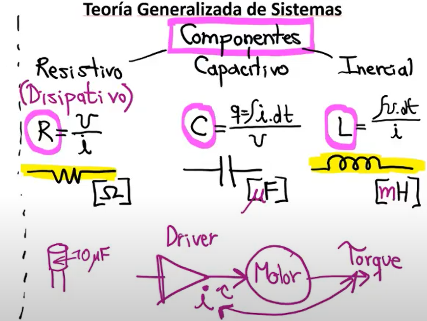
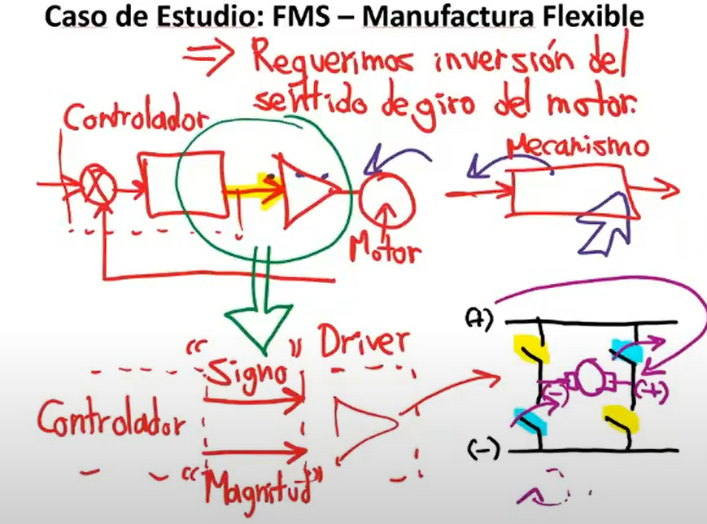
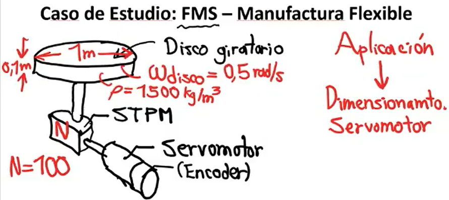

Introducción 5/10
Que conforma un sistema de control de lazo cerrado?
Lo primero es tener un algo a controlar, en términos generales se conoce como planta, a esta planta, tendremos
una variable a controlar, la cual puede estar sujeta a perturbaciones. La retroalimentación por tanto nos permite
conocer la variable que queremos controlar y ajustar los controladores necesarios para dirigir esta variable al punto deseado.
El movimiento deseado de una variable se conoce como perfil de movimiento. La referencia o el perfil de movimiento, usualmente no será
tipo paso o rampa, en ciclos repetitivos este perfil será cambiante en el tiempo, por tanto deberemos tener en cuenta las variables dinamicas del cuerpo.
En este curso estaremos trabajando con elementos electricos, por tanto estaremos utilizando motores electricos, elementos que se situará, entre el controlador y la planta, es decir nuestro actuador.
Mecanismo o Planta
Existen variables de interés como posición, velocidad, torque. Las dos variables
de mayor interés suelen ser posición y/o velocidad. Por ejemplo una banda que transporta
elementos en una linea suele tener control de velocidad. Mecanismos de corte suele tener
sistema de control de posición. En otras aplicaciones estaremos usando el torque como variable de
interes. Por ejemplo en el enrollamiento de papel higienico, a medida que el papel se va enrollando
en capas, por tanto si controlasemos velocidad, si aumentamos el radio, la velocidad aumentará, y puede que
en un momento que la tensión que sufre el papel sea muy grande y termine rompiendose. Por tanto mantendremos
el torque uniforme sin importar que el rollo aumente su diametro.
 Estas variables tienen un orden jerarquico, por tanto, podemos controlar distintas variables, se puede hablar
de un sistema de control en cascada donde un lazo interno se controla la posición, luego uno intermedio la velocidad,
finalmente un lazo mayor donde la variable a controlar seria el torque.
Estas variables tienen un orden jerarquico, por tanto, podemos controlar distintas variables, se puede hablar
de un sistema de control en cascada donde un lazo interno se controla la posición, luego uno intermedio la velocidad,
finalmente un lazo mayor donde la variable a controlar seria el torque.

Sistema de Transmisión de potencia Mecanica

Algunos ejemplos de sistemas de transmisión de potencia mecanica, son: Correas, reductores,
engranajes, trenes, transmisión por cadena, tornillos de transmisión de movimiento. La función
principal de este elemento es ayudarnos a realizar un dimensionamiento apropiado del motor. Tenemos
la opción de conectar el mecanismo directamente al eje del motor, esto se conoce como direct drive, cuando realizamos
esta conexión estamos diciendo que nuestro motor tendrá que dar el 100% de la potencia para mover el mecanismo,
nuestro STPM tendrá la tarea de funcionar como transformador, en este caso de transformador mecanico y estáriamos hablando
de potencia mecánica, donde la velocidad angular y el torque son las protagonistas de este transformador.
Inicialmente se asume que la potencia mecanica que entra y sale no tiene perdidas, aunque esto sea falso en la practica.
Sin embargo, se diseñan y se seleccionan los motores en base al peor caso o a la peor situación posible.
Si utilizamos un tren de engranajes o una caja de reductora de velocidad, bajaremos la velocidad angular total del motor, sin embargo
estaremos obteniendo un aumento del torque para mantener la relación matematica.
Driver o Amplificador

Este bloque intermedio entre el actuador y controlador, es un bloque potencia electrica debido a que nuestro controlador, suele trabajar
en tensiones y corrientes bajas, y nuestro actuador trabaja con tensiones o potencia media y alta. Por tanto las variables que se trabajan
son las de potencia electrica, asociada a la tensión, corriente y a la frecuencia.
Controlador
El controlador, es uno de los bloques más importantes y es el que nos permite de una u otra forma, controlar las variables en cuestión por medio de los actuadores. Uno de los controladores más utilizados de manera profesional es el controlador PID, (Proportional-Integral-Derivative) por tanto el controlador aplica una función correctiva de manera activa . También podemos por tanto agregar un bloque en paralelo al PID que no dependa del error sino de la referencia, el cual será llamado Feed Forward, También llamado control por prealimentación.
Nuestro controlador por tanto tiene como objetivo, seguir la referencia o el perfil de movimiento
que hemos asignado desde un comienzo, el PID nos ayudará con el error y las perturbaciones que sufre el mecanismo.
Sensor
El sensor es el bloque que nos permite conocer una o más variables ya sea de manera directa o indirecta, por ejemplo, podemos conocer de manera indirecta el torque ejercido por un motor, debido a la corriente que está circulando y la relación matematica que existe entre estos dos. De manera directa podemos utilizar encoders, resolvers, potenciometros y otros elementos que nos permiten conocer nuestra variable de manera directa.
Mecanismos, DOF Y mobilidad
Dinamica
Lo asociamos a Kinematics donde hacemos el estudio del movimiento sin tener en cuenta las fuerzas, y Kinetics,
donde asociamos las fuerzas debido al movimiento.
Una articulación que pueda moverse en algún eje se denomina como eje, por tanto un mecanismo con 2R es un mecanismo,
que es capaz de rotar o desplazarse en dos ejes.
En un movimiento rotacional aplicamos torque y en un movimiento traslacional aplicaremos fuerza, esto para realizar
la selección de motores. Por tanto en el estudio de Kinematics y Kinectics podremos encontrar el torque máximo, valor
necesario para seleccionar una referencia de un motor.
Perfiles de movimiento 26/10/2021
Perfil triangular y trapezoidal
Los perfiles de movimiento nos permiten tener un perfil acerca del movimiento que se desea realizar mediante el mecanismo,
cuando hablamos de triangular y trapezoidal nos referimos a la posición.
Calculamos la posición como la integración de la velocidad y la aceleración como la primera derivada de la velocidad,
y el jerk como la segunda derivada. Dwell Time se refiere al tiempo de reposo de la velocidad.
Para el perfil trapezoidal se suele referir en tiempos de 1/3 donde el primer tercio es una velocidad en aumento,
luego una velocidad maxima, y finalmente un descenso en la velocidad hasta llegar a velocidad cero. No es necesario completamente que el
pefil sea simetrico, el frenado por ejemplo puede ser más veloz que la aceleración inicial.
Este perfil de velocidad trapezoidal se puede observar de la siguiente forma de manera grafica:
Jerk Limiting
Suponiendo una banda transportadora que desplaza cajas de manera apiladas cuando hay una variación en la aceleración o velocidad en la banda sin un limitante de Jerk estas cajas pueden sufrir una caida debido al cambio de aceleración, debido a esto se propone una variación más suave en los cambios de aceleración disminuyendo así lo subito del cambio.
Por otro lado, realizar este tipo de maniobras tiene ciertos costos computacionales, este perfil de manera suavizada, se conoce en la literatura como s-type debido a su forma senoide, sin embargo este tipo de perfil al ser no lineal lleva ciertos costos, y es que se puede desglosar cada zona en zonas más pequeñas, por tanto, la primera subida se puede separar en 3 subzonas, una zona, no lineal, una zona lineal de ascenso constante, y finalmente una zona de desaceleración
Esto claramente tiene incidencia en la aceleración, posición y jerk, obteniendo así variaciones en las demás graficas. Como cambian las zonas entonces cambian tambien su conformación polinomial, sin el limitante de Jerk tenemos una composición polinomial de 2, en contraste a un perfil de tipo S que se llega a una composición polinomial de grado 4.
Inertia Mismatch
Uno empieza mediante el supuesto que el mecanismo sea apropiado para el motor utilizado, sin embargo el motor se apoya
mediante el sistema de transmisión de potencia mecanica, ajustando las relaciones de torque y velocidad angular. El motor no ve al mecanismo
como es realmente es, sino lo observa mediante el sistema de transmisión de potencia mecanica ya sea agrandando el mecanismo o reduciendolo.
Teoria generalizada de sistemas
Proveer ciertas bases para el modelado matematico, más alla de eslabones y articulaciones se observará por las partes que la conforman, siendo así
masa resorte y amortiguamente, con masa nos referimos a movimiento traslaciones o momento de inercia cuando refiere a movimiento rotacional.
Un motor es un elemento electro magnetico mecanico debido a que actua debido a los campos magneticos generados. Debido al tamaño de los motores,
aumenta la resistencia electrica lo que aumenta la temperatura asociada al motor lo que nos limitará nuestro componentes o elecciones.
Para motores DC pequeños la resistencia electrica suele estar aproximadamente en el orden de decimas a unidades de Ohmios.
Las capacitancias se oponen a los cambios de tensión y las inductancias a los cambios de corriente. En un circuito electrico, es usualmente que se trabaje en cuestión a la tensión por tanto es más frecuente encontrar capacitores que bobinas, sin embargo, en motores la corriente tambien es importante para tener en consideración. La corriente está relacionada con el torque por tanto mantener la corriente uniforme en un motor mediante un driver es necesario mantener la corriente uniforme a lo largo del movimiento.
A nivel mecanico la relación más cercana a resistencia electrica es la masa, representanda por un amortiguador haciendo uso de la ecuación B = F/v, donde encontramos un relación de fricción debido a sus componentes este elemento suele representarse en catalogos con las unidades Ns/m. Para la capacitancia mecanica tendremos asociado la constante K que es la constante de resorte, por tanto el resorte es analogo al capacitor electrico. Para la componente de tipo inercial mecanico lo que tendremos asociado será la masa.
Para la parte mecanica rotacional tendremos analogias muy parecidas al movimiento traslacional, las cuales son las siguientes:
Para el amortiguamiento tenemos asociado el torque y la velocidad angular, por tanto las unidades que refieren a esta componente viene dado por [N*m*s/rads]. Por el lado del resorte torsional tenemos las siguientes unidades K_r = [T/theta] , para el momento de inercia tenemos [Kg-m^2].
Cargas Reflejadas y Aparentes 28-10-2021
Sistemas de transmisión de potencia mecánica
Cuando el mecanismo y el motor están conectado directamente se llama "Direct Drive".
Nuestro STPM lo podemos caracterizar en una primera aproximación mediante una potencia de entrada y una potencia de salida.
Para las variables traslacionales, tenemos Fuerza y velocidad, para movimiento rotacional tengo Torque y movimiento angular,
tanto para entrada como para salida. Haciendo uso de la ley de conservación de energía la potencia suministrada a la entrada
deberá ser igual a la potencia generada a la salida.
Un conjunto de elementos a los cuales se le puede realizar un análisis de transmisión de potencia son:
Cajas de engranajes, polea y correa, cadena, Tornillos de transmisión de movimiento.
Independientemente del elemento usado para la transmisión, todos hacen uso de la relación de transmisión, por tanto,
idealmente la potencia de salida es igual a la potencia de entrada, por tanto no hay pérdidas. Sin embargo, esto es falso
en el mundo real, debido a que si existen pérdidas en el proceso es decir Ps < Pe
Para tener en cuenta las pérdidas producidas en la transmisión, podemos hacer uso de la eficiencia
que se representa como la relación entre las potencias, Ps/Pe. De los elementos anteriormente mencionados, los tornillos
de transmisión son lo más eficientes.
Hay diferentes formas de tratar con la eficiencia y las pérdidas, existen dos caminos:
Primer camino es trabajar sobre las condiciones ideales y al final del ejercicio ajustar el cálculo para compensar esas pérdidas inherentes.
El segundo camino es ir haciendo consideraciones progresivas de los factores de eficiencia provistos por los fabricantes, este camino
siempre estará viciado por la disponibilidad de los datos de cada fabricante.
Volviendo a la condición primera podemos decir que: Ps = Pe --> Ts*ws = Te*we ---> Ts/Te = we/ws
Podemos hablar de un factor N de transmisión creado de la relación anterior, esta N es la relación de transmisión de potencia,
a secas como relación de transmisión. La N puede ser llevada a otros ámbitos, como desplazamiento de salida y entrada, de igual forma
de aceleración de entrada y salida.
En general, en control de movmiento usamos sistemas de transmisión de potencia mecánica con reducción de velocidad.
El proceso empieza en el lado de la aplicación, "La aplicación es la reina", todo se selecciona para cumplir
los requerimientos de una aplicación, por ejemplo la velocidad de producción, que se traduce en un movimiento ciclíco o
repetitivo. Por tanto partiendo de la aplicación se escoge el STPM y finalmente el motor que sea valido. Este procedimiento
se hace para cada eje, cumpliendo perfiles de movimeinto diferente en cada ocasión.
El torque o par es otra variable determinante, el torque o par que necesita otorgar el STPM, estos calculos se logran gracias al entendimiento de como se mueve
el mecanismo en el tiempo, por ejemplo un eslabón.
El factor nos permite aumentar el torque proporcionado por motor, una vez calculado el torque máximo podemos dimensionar el motor, por medio del sizing.
La Maniobralidad es la capacidad o caracteristica del sistema de control de ejercer un movimiento rapido y preciso sobre el motor. El rango de operación de un motor paso a paso es menor que el de un servomotor. Un motor paso a paso suele tener un rango de operación de 1000 RPM, para un motor asíncrono de jaula de ardilla tiene una velocidad tipica de 1800-1600 RPM, y en motores Brushless DC BLDC, suelen estar entre 3000-5000 RPM, por medio de la caja de transmisión tendremos una ganancia a partir de las RPM aportadas por el motor DC.
Cargas Reflejadas o Aparentes
Retomando la clasificación por componentes de nuestro sistema, podemos recordar que la masa o inercia están asociados
a una aceleración, el amortiguador está asociado a la fricción y el resorte está asociado a la flexibilidad.
- Inercia aparente o Reflejada Dado un STPM, mediante el cual tiene un sistema de engranajes, tiene asociado un N. El momento de inercia que está adjunto al mecanismo, se considera el mecanismo una carga para el motor y STPM. El torque es conveniente acompañarlo de la aceleración provista por el eje de entrada.
- Amortiguador Aparente En este caso haremos equivalencia entre Torque y velocidad en los ejes de la STPM, por tanto obtendremos como resultado un B_lap. A mayor N tendremos mayores perdidas, por tanto hay que tener un balance en la selección de este parametro.
- Resorte Aparente En este caso haremos equivalencia entre Torque y desplazamiento angular de entrada y salida.
- Relación o razón de Inercia IR: Inertia Ratio, IR = J_ap/J_motor , es la relación entre la carga mecanica y la capacidad del motor, se recomienda por tanto que la relación de inercia sea menor a 10 para un correcto funcionamiento.
Por tanto vamos a observar el mecanismo que es observado desde el motor, y por tanto en el eje del motor, el torque y aceleración visto se conoce como proceso de reflejo, finalmente El torque aparente y aceleración aperente se puede medir desde el eje del motor.
2-11-2021
La relación de Inercia es uno de los temas más importantes para el curso debido a que este es el que dimensiona por completo el motor que estará accionando el mecanismo, y hacer uso correcto de relación de Inercia, abaratará costos en un aspecto, sin embargo esta relación es importante para mantener un balance entre precisión y velocidad. Por tanto si hay una desproporción entre la carga aparente y el motor el mecanismo no funcionará de manera favorable.
Mientras más critica sea la aplicación, se buscará que siempre esta relación este por debajo de 10 y lo más cercano a 1. Mientras más cercano sea a 1, más preciso y veloz será el mecanismo, pero se evitará estar por debajo de 1 aunque se pueda realizar de manera matematica.
Caso de Estudio: FMS - Manufactura Flexible
Sea un disco giratorio que está unido a un sistema de transmisión de potencia de relación generica N y un servomotor con un
encoder de sensado, buscaremos en un primer paso el dimensionamiento del motor en relación a la aplicación.
El disco tiene ciertas estaciones de trabajo mecanizadas, donde es posible ubicar productos sobre estas estaciones.
El disco tiene 7 estaciones de trabajo en total, el ángulo entre dos estaciones de trabajo será denominado como theta y se realizará
siempre a favor de las manecillas del reloj.
La primera pregunta a realizar por tanto es como realizar un perfil para alcanzar una segunda estación de trabajo dado una posición inicial,
el diseño del perfil va de parte del diseñador, y es recomendable por tanto trabajar con perfiles de velocidad más que de posición.
Nuestro perfil de velocidad tendrá una forma trapezoidal hasta llegar a la nueva estación de trabajo, y como se repite el ciclo, se caracteriza
como repetitivo. El periodo T, será la duración total de un movimiento, y una distribución tipica para la distribución trapezoidal
es de 1/3, hay que asignar de igual forma un tiempo de reposo entre movimiento para que el mecanismo pueda realizar alguna operación sobre el producto.
Como nuestro disco tiene 7 estaciones de trabajo, podemos hablar sobre consideraciones angulares, para movernos entre estaciones
podemos definir un delta theta donde en ese caso especifico es 2*pi/7 , para pasar dos estación es 4*pi/7, para pasar a 3 estaciones es 6*pi/7,
, para mayor productividad se recomienda realizar movimiento con inversión de giro para movimientos mayores de estaciones.
Mencionando lo anterior requerimos inversión de giro del motor. Por tanto entendiendo la aplicación podemos realizar un dimensionamiento del motor
ya sabemos que necesitamos ciertas cosas para realizar lo anterior mencionando, necesitamos: controlador, driver, motor, mecanismo.
En algunos equipos electronicos, el controlador al momento de comunicarse con el drive puede hacerlo de varias formas, una forma es por medio de dos señales, Signo y magnitud, donde Signo es la dirección que tomará el motor,y magnitud es la velocidad a la que irá el motor. Los transistores al funcionar en tipo conmutación abierto/cerrado se enviará una señal tipo PWM para controlar la velocidad del motor, esto dando una tensión aparente al motor en su funcionamiento.
Haremos el ejercicio para 6*pi/7 que es mover el disco por 3 estaciones de trabajo de una sola vez. Estaremos usando el perfil trapezoidal y haremos una distribución de 1/3. Haremos una consideración de velocidad máxima, de relación N y de dimensiones del disco, como se ve a continuación.

Para una relación N de 100 y una velocidad máxima de 0,5 rads tendremos una velocidad máxima de 50 rads/s en nuestro motor, y la conversión en rpm
son 477 revs/mins. Se recomienda no usar motores paso a paso debido a la velocidad, y por tanto se recomienda usar motores dc y motores tipos brushless.
Como nuestro perfil es de velocidad, para obtener el desplazamiento tendremos que hacer una integración. En términos de perfil de velocidad
hay que relacionar el delta theta deseado con el perfil que se busca.
Tipos de Cargas
Hay 4 tipos de cargas para realizar un dimensiona del motor, estas son: Inercial, Fricción, Gravitacional y de Proceso.
Estos tipos de cargas pueden estar o no presentes en las distintas aplicaciones, Donde las cargas de tipo inercial se refiere a los torques
o fuerzas necesarios para acelerar o desacelerar un mecanismo, se puede considera como la carga principal. La carga de fricción
está asociado a los torques o fuerzas necesarios para compensar el rozamiento entre las piezas. El caso de la carga gravitacional se refiere
a los torques o fuerzas cuando las cargas se afectan directamente por el peso. Proceso está asociado a los torques o fuerzas que deben compensar
el mecanismo.